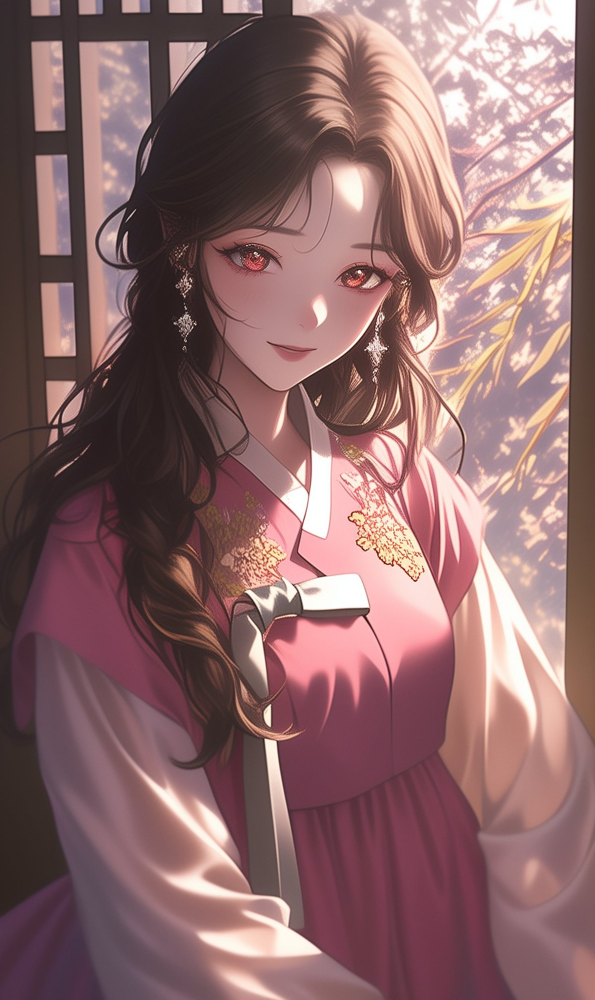

紫雲
자운당
≡
자운 아씨 캐릭터 자리
Niji v6로 생성한 PNG 추가 시 자동 표시
→ assets/character-hero.jpg
紫雲堂
그 분과의 인연,
자운당
이 풀어드립니다
— 자운 아씨가 짚어드리는 운명의 흐름 —
❖ ─── ❖ ─── ❖
내 사주 풀어보기 →
첫 풀이 무료
· 익명 보장 · 약 3분 소요
12
년
신당 운영
3,800
+
상담 누적
98
%
재방문
✨ 어라, 이거 내 얘긴데..?!
혹시,
이런 마음
아닌가요?
"그 사람과 나, 운명일까 우연일까... 혼자 자꾸 곱씹게 돼요."
— 30대 여성, 인연 풀이 후기
"분명 잘 풀리는 듯 했는데, 어디서부터 막혔는지 모르겠어요."
— 40대 남성, 사주 풀이 후기
"올해는 좀 다르고 싶은데, 어떻게 시작해야 할지 모르겠어요."
— 20대 여성, 신년 운세 후기
◆ 자운당 운세관 ◆
지금 가장
궁금한 게
뭐예요?

자운 아씨 카드 이미지 자리
TOP
1
자운 아씨 정통사주
사주풀이
'그 분과의 인연, 자운당이 풀어드립니다'
◆ 자운당이 다른 이유 ◆
왜
자운당인가요?
12년 신당 운영자가 직접 풀어드리는 정통 사주
🌸
자운 아씨
자운당 정통사주 안내자
소개 보기 →
💬
실제 후기
받아보신 분들의 한 마디
★ 4.9 / 1,200+
🕯️
이런 분께
사주풀이 추천 대상
자세히 →
❓
자주 묻는 질문
처음이신 분 필독
Q&A 보기 →
◆ 왜, 자운당인가 ◆
자운당의
세 가지 약속
01
12년, 한자리에서
짧게 머물다 사라지는 신당이 아닙니다. 부산 한복판에서 12년, 같은 자리에서 천 번이 넘는 굿과 풀이를 지나온 자운당입니다.
02
결과지에서 끝나지 않습니다
풀이 결과가 마음에 걸리신다면, 자운 아씨가 직접 짚어드리는 1:1 상담으로 이어집니다. 글로 다 못 푸는 자리가 있어요.
03
전국 60명 학생 무녀 네트워크
자운당은 혼자가 아닙니다. 자운 아씨에게 배운 60명의 학생 무녀가 전국에서 함께 짚어드려요.
자운당을 다녀가신 분들
★★★★★
"몇 년을 갈팡질팡하던 자리가 한 번에 짚어졌어요. 결과지 보다가 진짜 맞다는 게 무서울 정도였어요. 1:1 상담까지 받고 결정했습니다."
— 김** 님, 30대 여성
★★★★★
"이런저런 사주 앱 다 해봤는데, 자운당은 좀 달라요. 결과지부터 따뜻하고, 상담은 더 좋았어요."
— 박** 님, 40대 남성
★★★★★
"부산까지 직접 갔다 왔는데, 그 자리에 앉으니까 알겠더라고요. 왜 12년이라고 자신 있게 말하는지."
— 이** 님, 20대 여성
내 사주 풀어보기 →